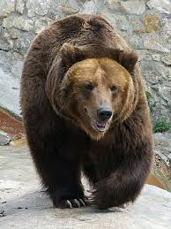

The Brown Bear
The brown bear (Ursus arctos) is native to parts of northern Eurasia and North America. Its conservation status is currently "Least Concern." There are many subspecies within the brown bear species, including the Atlas bear and the Himalayan brown bear.
🔍 Learn more on
Wikipedia
.

Here are some bear subspecies:
- Arctos: Gấu nâu Âu Á.
- Collarus: Gấu nâu Đông Siberia.
- Horribilis: Gấu xám Bắc Mỹ (Grizzly).
- Nelsoni: Gấu xám Mexico (Đã tuyệt chủng).
Top countries with the largest populations:
- Russia: Với số lượng lớn nhất thế giới.
- United States: Chủ yếu ở vùng Alaska.
- Canada: Phân bố rộng khắp các tỉnh miền Tây.